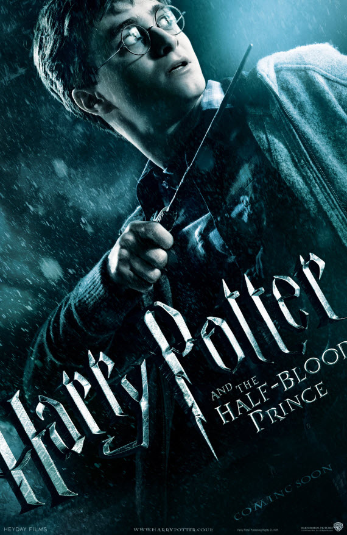

Now that I have told you what the Harry Potter books/movies are, I am going to tell you exactly what I think. Personally I think it is the best series of movies ever created in any type of genre. Why do I think this? Well it isnt all just about the magic like it seems. Its also how these group of kids grow up together and thier life and stuff that every pre-teen and teen go through but that in a world of magic. But its everything from school to bullying to love lives and family drama. The movies humor goes from a childish comedic tone to life and as they grow up and it gets more serious to a life and death kind of thing. Overall its a pretty well rounded area to be around and get all the types of genres. Action, fantasy, comedy, suspense, romance, and thriller, and i guess since there are ghosts and scary images ill give it a horror type genre to. But apart from Selena (the biography of Selena Quintanilla) Harry potter is the best. 